# instala {sf}
install.packages('sf')
# carga la libreria en el entorno de R y permite utilizar
# las funciones adicionales que contienen
library(sf)Taller 7 (IMSD1025)
Operaciones geométricas con datos vectoriales
1 Descripción
En el taller 6 trabajo con algunas operaciones geométricas con datos vectoriales, como buffer, simplificar y centroides. En este taller utilizará otras operaciones geométricas, como recorte, union, transformación de tipo y subconjunto y rectorte.
2 Objetivo del taller
Familiarizarse con operaciones geométricas con datos vectoriales.
3 Paquetes R
Para este taller utilizaremos la libreria sf.
Para {sf} debe realizar lo siguiente:
4 ¿Qué debe entregar?
Deberá utilizar RStudio para crear un script, en donde resolverá cada uno de los ejercicios. Debe utilizar los comentarios (#) para hacer una descripción del ejercicio e incorporar cualquier información que ayude a entender lo realizado. A modo de ejemplo:
# Ejercicio 1:
# comentario explicando lo que se hace
{
Aca va el script que resuelve el ejericio 1
}Debe guardar el script con el nombre taller4.R. Los archivos los debe subir en el campus virtual en la sección Actividades -> Evaluaciones -> Talleres -> Taller4
5 Datos
Trabajrá con los límites comunales de la Región Metropolitana y la subcuenca de Mapocho Bajo. Los datos los debe descagar desde [acá]
6 Ejericios
- Cree un hexágono de acuerdo al diagrama utilizando un valor de a=10, luego aplique una transformación afin para crear otro hexagono, pero que este desplazado 8 unidades hacia la derecha.
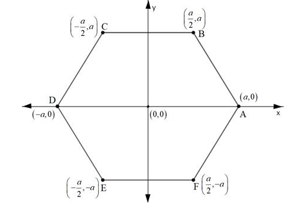
library(sf)Linking to GEOS 3.10.2, GDAL 3.4.1, PROJ 8.2.1; sf_use_s2() is TRUEa=10
m <- matrix(c(-a/2,a,a/2,a,a,0,a/2,-a,-a/2,-a,-a,0,-a/2,a),ncol=2,byrow = TRUE)
hex <- st_polygon(list(m))
hex2 <- hex + c(8,0)
plot(hex)
plot(hex2,add = TRUE)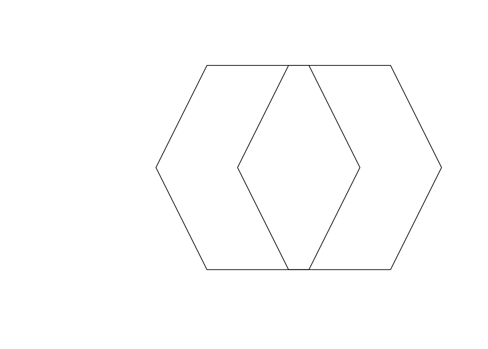
- Con los hexágonos del ejercicio anterior aplique las operaciones de corte
st_difference,st_union,st_intersectionyst_sym_difference. Grafique el resultado de cada una de las operaciones.
dif <- st_difference(hex,hex2)
plot(dif)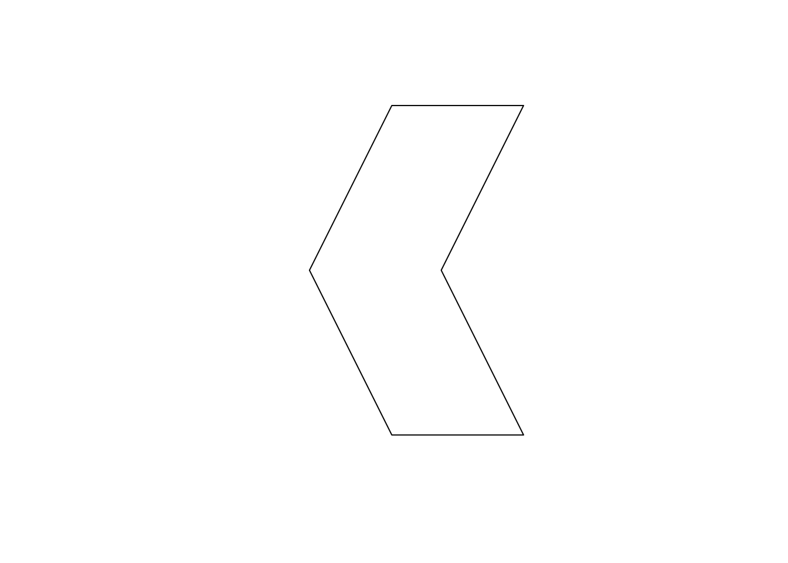
uni <- st_union(hex,hex2)
plot(uni)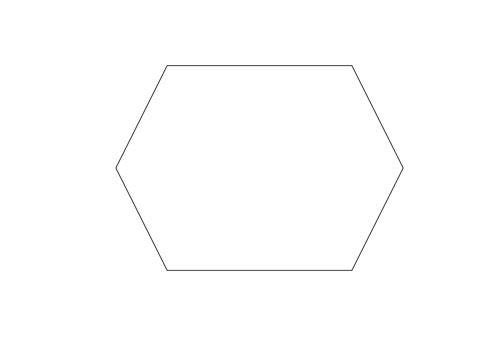
int <- st_intersection(hex,hex2)
plot(int)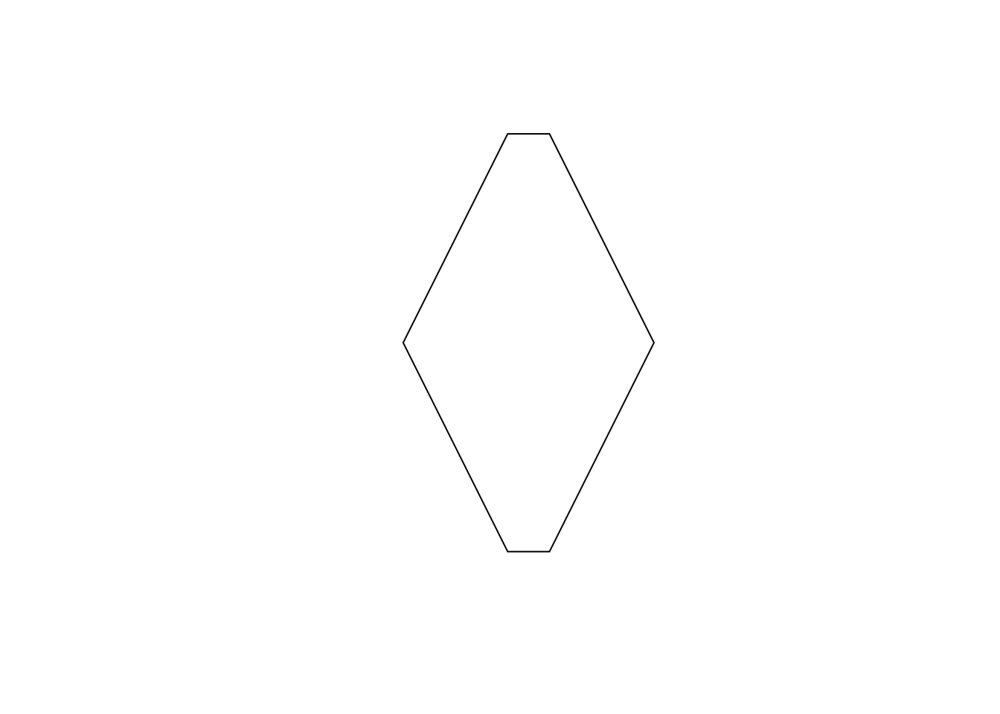
sym <- st_sym_difference(hex,hex2)
plot(sym)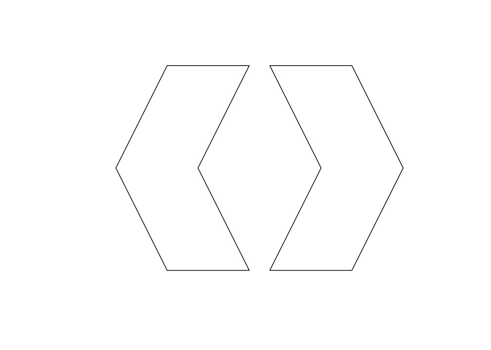
- Cargue los datos de los límites comunales que se encuentran en el archivo geopackage
data_taller7.gpkg. Apliqué la operación deuniónpara disolver las comunas y lograr obtener los límites de la región Metropolitana.
lim <- read_sf('../data/data_taller7.gpkg',layer = 'comunas_RM')
plot(st_geometry(lim))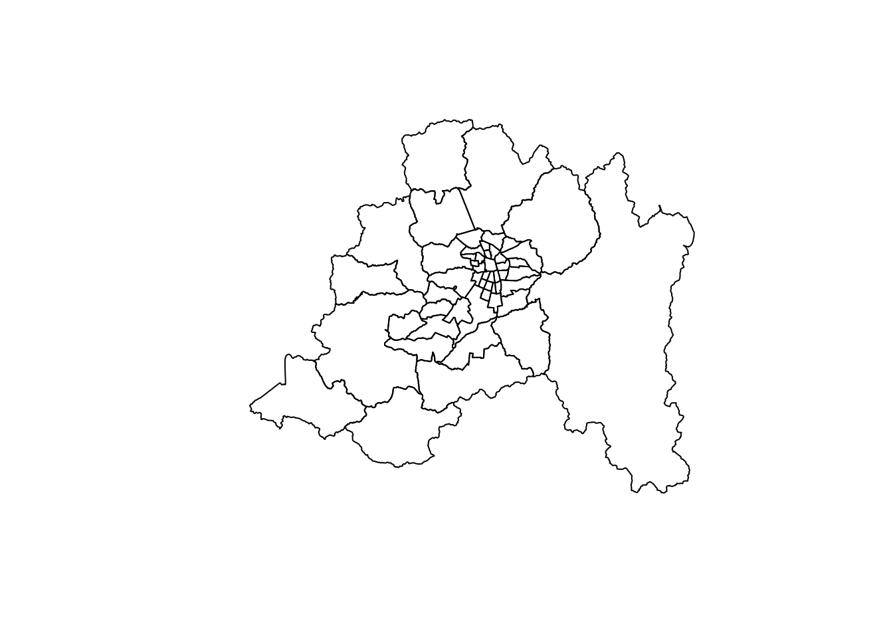
lim_RM <- st_union(st_geometry(lim))
plot(st_geometry(lim_RM))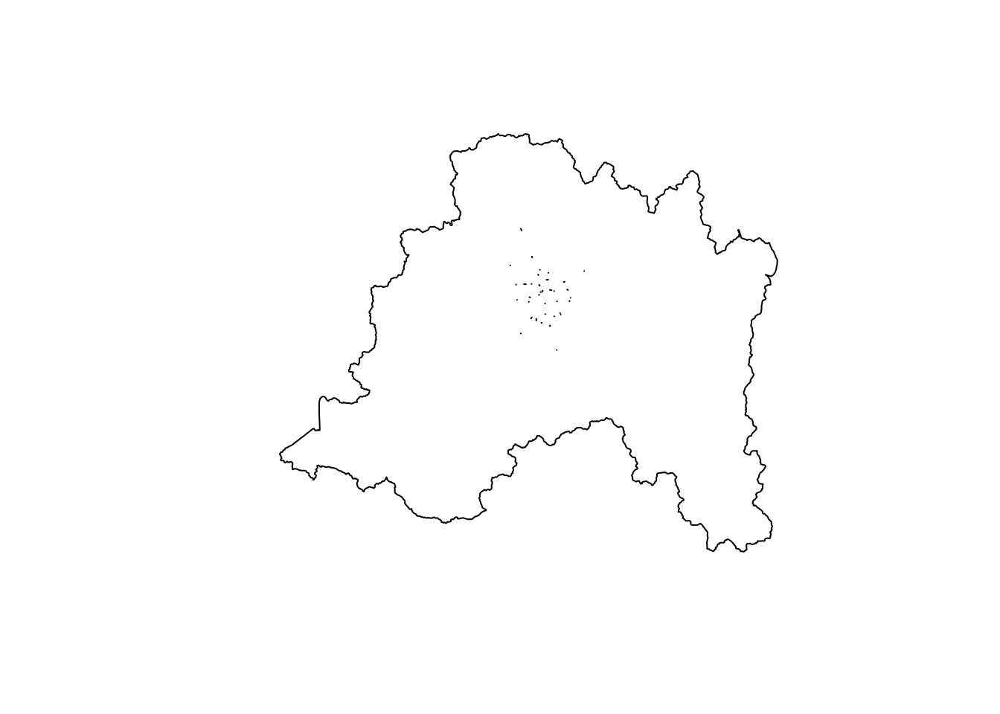
- Utilice la capa de límites comunales y subcuenca de Mapocho Bajo, para aplicar las operaciones de corte que permitan:
subcuenca <- read_sf('../data/data_taller7.gpkg',layer = 'subcuenca_mapocho_bajo')- encontrar las comunas que se encuentran (completa o parte) en la cuenca de Mapocho Bajo.
cominter <- st_intersection(lim,subcuenca)Warning: attribute variables are assumed to be spatially constant throughout
all geometriesplot(st_geometry(cominter))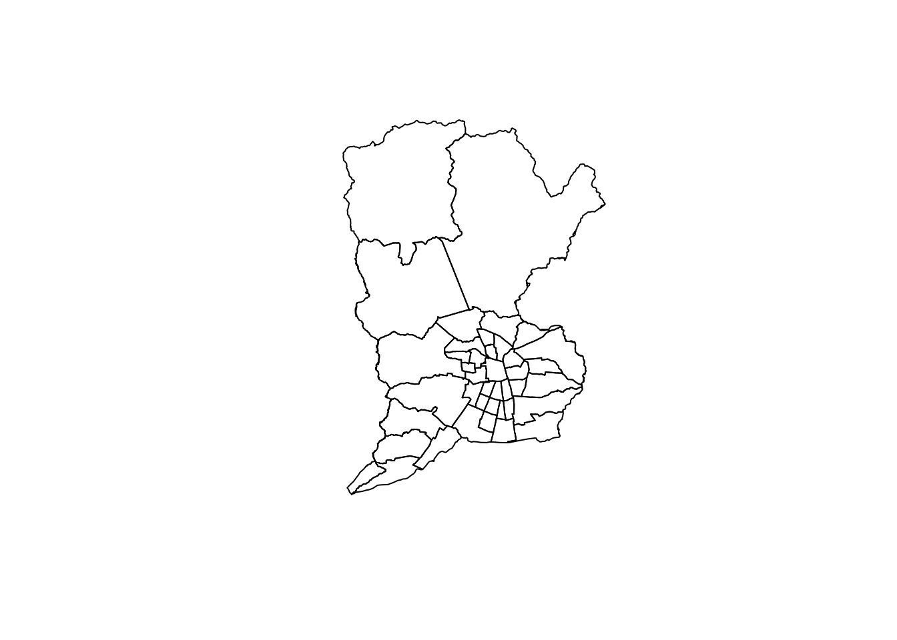
- las comunas que se encuentran fuera (completa o parte) de la cuenca de Mapocho Bajo
comonointer <- st_difference(lim,subcuenca)Warning: attribute variables are assumed to be spatially constant throughout
all geometriesplot(st_geometry(comonointer))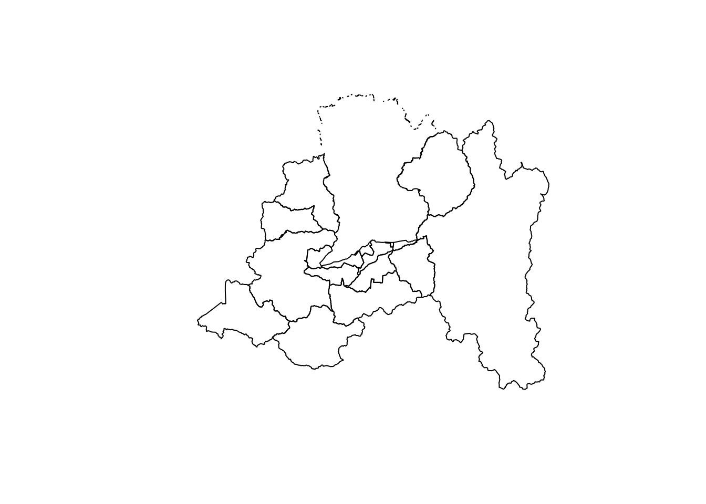
- Utilice transformación affine para desplazar en 5km hacia el este y el norte las comunas.
limdes <- st_geometry(lim) +c(5000,5000)
plot(st_geometry(lim))
plot(limdes,col = 'red', add = TRUE)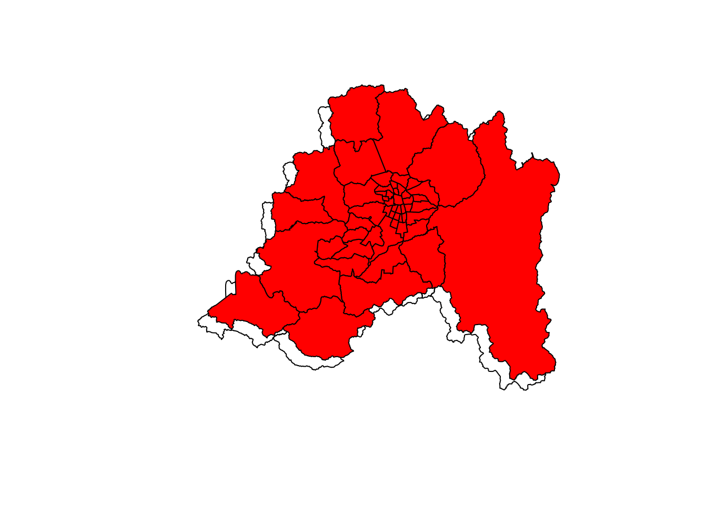